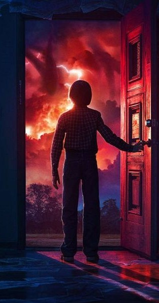

About Us
Welcome to our cinematic theme website inspired by dark storytelling and creative visual design. This project combines web development, graphic design, and content creation to deliver an immersive experience through story-driven layouts and character-based presentation.
Our Website
Our website is designed as a creative storytelling platform with multiple sections that build a complete visual narrative experience:
- Story: Presents the main narrative in a cinematic reading style.
- Characters: Introduces characters through visual panels and descriptions.
- Review: Shares creative reviews and presentation concepts.
- Quest: Adds interactive and symbolic elements connected to the story.
- User: Represents audience interaction and engagement.
About the Developers
This website is created by:
Yash Kumar & Himanshu Sky
We are students of Bachelor of Computer Applications (BCA) and passionate about website development, graphic designing, and content creation. This project is built as a creative practice to improve our skills in UI design, cinematic layouts, and modern frontend development.